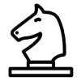

|  |
Chess game
Chess game against computer for Windows
|
Figure (фігура) – шахова фігура (пішка, король і тд). В деякій літературі зустрічається синонім piece.
FigType – тип фігури.
Фігури бувають таких типів:
Point – координата клітинки на шаховій дошці. Початок відліку від лівого нижнього кута. Він починається з точки (0;0).
Move – хід фігурою. Містить початкову координату (from) та кінцеву (dest).
Field (chess board) – шахова дошка.
Cell – клітинка на шаховій дошці.
Army – набір шахових фігур одного кольору.
Marks – це позначки (виділення тих клітинок), куди може зробити хід вибрана фігура. Також є позначка, яка позначає клітинку, в якій знаходиться вибрана фігура.
Moves history / moves list - структура, яка зберігає інформацію про зроблені ходи та "знищені" фігури впродовж гри.